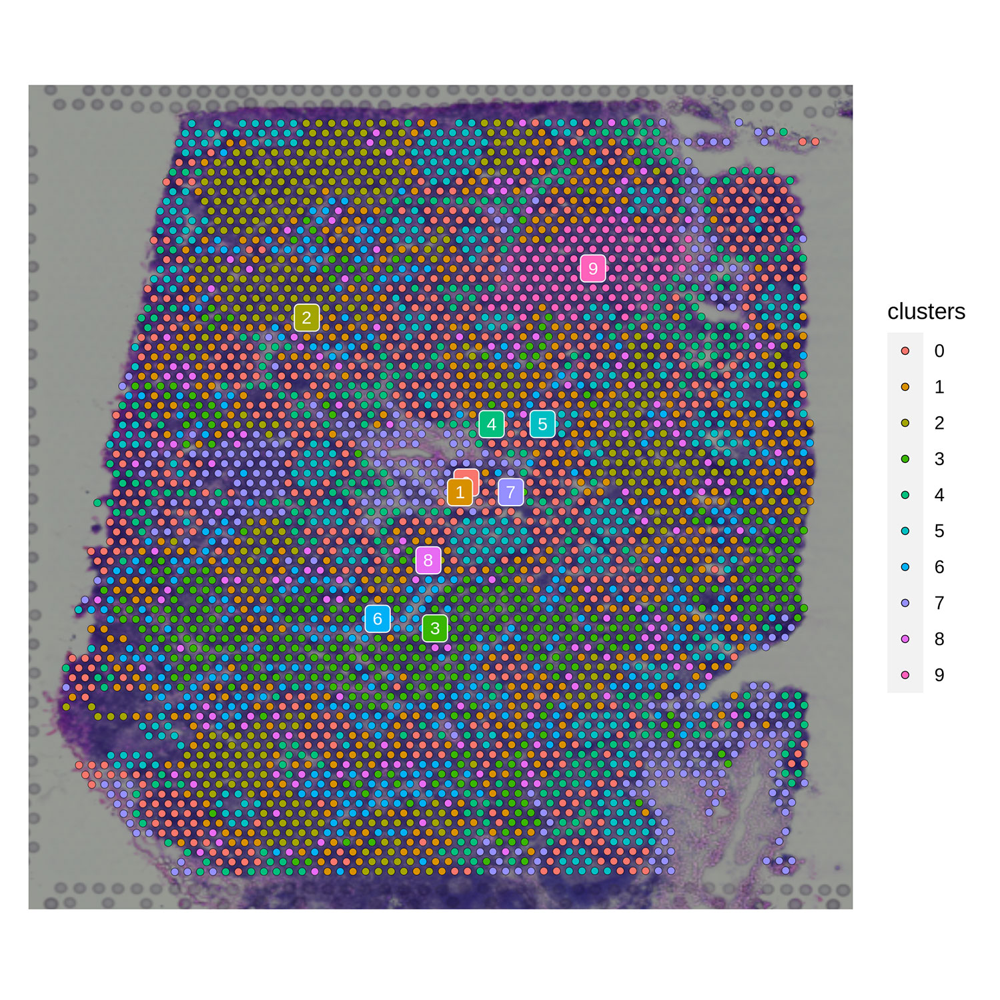

scDIOR
scDIOR: Single cell data IO softwaRe
Directory
scDIOR
Overview 
scDIOR software contains two modules, dior for R and diopy for Python. The data transformation was implemented by a ‘.h5’ file of HDF5 format, which harmonizes the different data types between R and Python. The different aspects of single-cell information were stored in HDF5 group with dataset. scDIOR creates 8 HDF5 groups to store core single-cell information, including data, layers, obs, var, dimR, graphs, uns and spatial.

Preparation
Operating Environment
1. Docker image (recommended) :
It is recommend to perform scDIOR in docker image, which ensures that the operating environment remains stable. scDIOR image is already available for download at Docker Hub, click here.
We Building scDIOR image:
- we first built the basic jupyter image which based on jupyter/base-notebook (jupyter managing Python and R) and fixuid (fixing user/group mapping issues in containers). This basic image is already available for download at Docker Hub, click here.
- Based on our customized basic image, we construct scDIOR image again by
Dockerfile. For the content ofDockerfile, please check the file under the dockerfile.
The current latest image contains the following main analysis platforms and software:
| R | version | Python | version |
|---|---|---|---|
| R | 4.0.5 | Python | 3.8.8 |
| Seurat | 4.0.2 | Scanpy | 1. |
| SingleCellExperiment | 1.12.0 | scvelo | 0.2.3 |
| monocle3 | 1.0.0 | anndata | 0.7.6 |
| dior | 0.1.4 | diopy | 0.5.2 |
2. conda environment (not recommended) :
The conda environment is changeable without Docker image, so it is not recommended to install the package in this way. The R and Python environments was built by conda, then dior and diopy are installed in R and Python respectively.
conda create -n conda_env python=3.8 R=4.0- R installation:
xxxxxxxxxx# in Rinstall.packages('devtools')devtools::install_github('JiekaiLab/dior')# or devtools::install_github('JiekaiLab/dior@HEAD')- Python installation:
xxxxxxxxxx# in pythonpip install diopyVersion control
At present, scDIOR is widely compatible with Seurat (v3~v4) and Scanpy (1.4~1.8) in different docker image. We configured mutitple version docker image (https://hub.docker.com/repository/docker/jiekailab/scdior-image) to confirm that scDIOR can work well between multiple versions of Scanpy and Seurat.dad ag
| Platform | Software | Version | data IO |
|---|---|---|---|
| R | Seurat | v3~v4 | ☑️ |
| Python | Scanpy | 1.4~1.8 | ☑️ |
Getting started
Here, we list the three specific examples and the extended function to show the powerful performance of scDIOR.
The three examples:
- One can perform trajectory analysis using Monocle3 in R, then transform the single-cell data to Scanpy in Python using scDIOR, such as expression profiles of spliced and unspliced, as well as cell layout. The expression profile can be used to run dynamical RNA velocity analysis and results can be projected on the layout of Monocle3.
- One can employ single-cell data preprocess and normalization method provided by Scanpy, and utilize batches correction method provided by Seurat.
- scDIOR supports spatial omics data IO between R and Python platforms.
The extended function:
- the function to load ‘.rds’ file in Python directly;
- the function to load ‘.h5ad’ file in R directly;
- command line
Starting environment (for docker image)
Remote server
- Logining server through
ssh L
xxxxxxxxxxssh -L localhost:port1:localhost:port2 user@remote_ip# port1: local port# prot2: remote port# user: remote sever user id# remote_ip: remote severip- Starting container of scDIOR image
xxxxxxxxxxIMG=hjfeng/scdior_image:1.2 # 1. 指定使用的镜像PORT=port2 # port2PROJECT=scdiorMEMORY=64gCWD=$(docker inspect $IMG | grep WorkingDir | head -n 1 | sed 's/.* "//;s/"//g;s/,//g')docker run -p $PORT:8888 \--name $PROJECT \-m $MEMORY \-u $(id -u):$(id -g) \-e JUPYTER_ENABLE_LAB=yes \-e JUPYTER_TOKEN=1234 \-v $PWD:$CWD \--rm \-it $IMG- Starting jupyter in user's browser
xxxxxxxxxxlocalhost:port1- Logining server through
Local computer
- Staring the container of scDIOR image
xxxxxxxxxxIMG=hjfeng/scdior_image:1.2 # 1. 指定使用的镜像PORT=port1# port2PROJECT=scdiorMEMORY=64gCWD=$(docker inspect $IMG | grep WorkingDir | head -n 1 | sed 's/.* "//;s/"//g;s/,//g')docker run -p $PORT:8888 \--name $PROJECT \-m $MEMORY \-u $(id -u):$(id -g) \-e JUPYTER_ENABLE_LAB=yes \-e JUPYTER_TOKEN=1234 \-v $PWD:$CWD \--rm \-it $IMG- Starting jupyter in user's browser
xxxxxxxxxxlocalhost:port1
R loading packages
xxxxxxxxxx# in Rlibrary(Seurat)library(SingleCellExperiment)library(dior)library(monocle3)library(ggplot2)Python loading packages
xxxxxxxxxx# in pythonimport scipyimport scanpy as scimport pandas as pdimport numpy as npimport scvelo as scvimport diopyExample A
One can perform trajectory analysis using Monocle3 in R, then transform the single-cell data to Scanpy in Python using scDIOR, such as expression profiles of spliced and unspliced, as well as cell layout. The expression profile can be used to run dynamical RNA velocity analysis and results can be projected on the layout of Monocle3.
Loading data with scvelo in Python
This data is curated by the scvelo, loaded by the code:
xxxxxxxxxx# in pythonadata = scv.datasets.pancreas()adata# AnnData object with n_obs × n_vars = 3696 × 27998# obs: 'clusters_coarse', 'clusters', 'S_score', 'G2M_score'# var: 'highly_variable_genes'# uns: 'clusters_coarse_colors', 'clusters_colors', 'day_colors', 'neighbors', 'pca'# obsm: 'X_pca', 'X_umap'# layers: 'spliced', 'unspliced'# obsp: 'distances', 'connectivities'Saving data with diopy in Python
xxxxxxxxxx# in pythondiopy.output.write_h5(adata = adata, file = './result/py_write_h5/data_write_velocity.h5')Loading data withdior in R
xxxxxxxxxx# in R sce <- read_h5(file= '.result/py_write_h5/data_write.h5', target.object = 'singlecellexperiment')cds <- new_cell_data_set(sce@assays@data@listData$X, cell_metadata = colData(sce), gene_metadata = rowData(sce))- Constructing single-cell trajectories by
monocle3. More details are available at monocle3
- Pre-process the data
xxxxxxxxxx# in R cds <- preprocess_cds(cds, num_dim = 50)- Dimensionality reduction
xxxxxxxxxx# in R cds <- reduce_dimension(cds)- Clustering the cells
xxxxxxxxxx# in R cds <- cluster_cells(cds, cluster_method= 'leiden')- Learning the trajectory graph and visualization
xxxxxxxxxx# in R cds <- learn_graph(cds)plot_cells(cds, color_cells_by = "clusters", label_groups_by_cluster=FALSE, label_leaves=FALSE, label_branch_points=FALSE, reduction_method = 'UMAP', cell_size = 1, group_label_size =8)
- Adding the Dimension
xxxxxxxxxx# in R reducedDim(sce,'PCA') <- reducedDim(cds, 'PCA')reducedDim(sce,'UMAP') <- reducedDim(cds, 'UMAP')reducedDimNames(sce)<- c('pca','umap','monocle_PCA','monocle_UMAP')Saving data withdior in R
xxxxxxxxxx# in R write_h5(data = sce, file = './result/r_monocle3_result/cds_trajectory.h5', assay.name = 'RNA' , object.type = 'singlecellexperiment')Loading cds_trajectory.h5 with diopy in Python
xxxxxxxxxx# in python adata = diopy.input.read_h5(file = './result/r_monocle3_result/cds_trajectory.h5')- RNA Velocity analysis. More details are available at scvelo
- Preprocess the Data
xxxxxxxxxx# in python scv.pp.filter_and_normalize(adata, min_shared_counts=20, n_top_genes=2000)scv.pp.moments(adata, n_pcs=30, n_neighbors=30)- Estimate RNA velocity
xxxxxxxxxx# in python scv.tl.velocity(adata)scv.tl.velocity_graph(adata)- Project the velocities
xxxxxxxxxx# in python scv.pl.velocity_embedding_stream(adata, basis='monocle_UMAP')
Example B
One can employ single-cell data preprocess and normalization method provided by Scanpy, and utilize batches correction method provided by Seurat.
Loading data with diopyin Python
The data is curated by scanpy, loaded by the code:
xxxxxxxxxx# in python adata = sc.read('data/pancreas.h5ad', backup_url='https://www.dropbox.com/s/qj1jlm9w10wmt0u/pancreas.h5ad?dl=1')- Visualization
xxxxxxxxxx# in python sc.pl.umap(adata, color=['batch', 'celltype'], palette=sc.pl.palettes.vega_20_scanpy)
Saving data with diopy in Python
xxxxxxxxxx# in python diopy.output.write_h5(adata, file = './result/batch_effect_data.h5', save_X=False) # Select not to save adata_all.X, because that's scale data,Loading data with dior in R
xxxxxxxxxx# in Radata <- read_h5(file = './result/batch_effect_data.h5', assay.name = 'RNA', target.object = 'seurat')adata@meta.data$batch <- as.character(adata@meta.data$batch)- Batch effect corrected by Seurat protocol. More details are available at Seurat
- Dataset preprocessing: Splitting the combined object into a list
xxxxxxxxxx# in Radata_list <- SplitObject(adata, split.by = "batch")- Dataset preprocessing: Variable feature selection based on a variance stabilizing transformation (
"vst")
xxxxxxxxxx# in Radata_list <- lapply(X = adata_list, FUN = function(x) { # x <- NormalizeData(x) The data is normal data and does not need to be normalized x <- FindVariableFeatures(x, selection.method = "vst", nfeatures = 2000)})- Select integration features
xxxxxxxxxx# in Rfeatures <- SelectIntegrationFeatures(object.list = adata_list)- Integration of cell datasets
xxxxxxxxxx# in Radata_anchors <- FindIntegrationAnchors(object.list = adata_list, anchor.features = features)adata_combined <- IntegrateData(anchorset = adata_anchors)- Downstream analysis for Integration data
xxxxxxxxxx# in RDefaultAssay(adata_combined) <- "integrated"adata_combined <- ScaleData(adata_combined, verbose = FALSE)adata_combined <- RunPCA(adata_combined, npcs = 30, verbose = FALSE)adata_combined <- RunUMAP(adata_combined, reduction = "pca", dims = 1:30)- Visualization
xxxxxxxxxx# in R options(repr.plot.width=20, repr.plot.height=8)DimPlot(adata_combined, reduction = "umap", group.by = c("batch", 'celltype'))
Example C
Loading data from 10X Genomics Spatial Datasets
Downloading the spatial data set from 10X Genomics Spatial Datasets
- Analysis and visualization of spatial transcriptomics data by scanpy spatial
- Reading the data
xxxxxxxxxx# in pythonadata = sc.read_visium('./data/V1_Human_Lymph_Node')adata.var_names_make_unique()adata.var["mt"] = adata.var_names.str.startswith("MT-")sc.pp.calculate_qc_metrics(adata, qc_vars=["mt"], inplace=True)- QC and preprocessing
xxxxxxxxxx# in pythonsc.pp.filter_cells(adata, min_counts=5000)sc.pp.filter_cells(adata, max_counts=35000)adata = adata[adata.obs["pct_counts_mt"] < 20]print(f"#cells after MT filter: {adata.n_obs}")sc.pp.filter_genes(adata, min_cells=10)- Normalize Visium counts data
xxxxxxxxxx# in pythonsc.pp.normalize_total(adata, inplace=True)sc.pp.log1p(adata)sc.pp.highly_variable_genes(adata, flavor="seurat", n_top_genes=2000)- Manifold embedding and clustering
xxxxxxxxxx# in pythonsc.pp.pca(adata)sc.pp.neighbors(adata)sc.tl.umap(adata)sc.tl.leiden(adata, key_added="clusters")- Visualization in spatial coordinates
xxxxxxxxxx# in pythonsc.pl.spatial(adata, img_key="hires", color=["clusters", "CR2"], save='.spatial_py_cluster_gene.png')
Saving data withdiopy in Python
xxxxxxxxxx# in pythondiopy.output.write_h5(adata=adata, file='./result/spatial_data_scanpy.h5', assay_name='spatial')Loading data with dior in R
xxxxxxxxxx# in Radata = read_h5(file = './result/spatial_data_scanpy.h5', assay.name = 'spatial')- Visualization in spatial coordinates
xxxxxxxxxx# in Roptions(repr.plot.width=8, repr.plot.height=8)SpatialDimPlot(adata, label = TRUE, label.size = 3, group.by='clusters', pt.size.factor = 1)
xxxxxxxxxx# in RSpatialFeaturePlot(adata, features = c('CR2'), pt.size.factor = 1)
Saving data with dior in R
xxxxxxxxxx# in Rwrite_h5(adata, file = './result/spatial_data_scanpy_v2.h5', assay.name = 'spatial')load the data by diopy in Python
xxxxxxxxxx# in pythonadata = diopy.input.read_h5(file = './result/spatial_data_scanpy_v2.h5', assay_name='spatial')scDIOR extended function
scDIOR read h5ad file
Reading the h5ad file in R. dior::read_h5ad function will create a file with _tmp.h5 suffix.
xxxxxxxxxx# ~/.conda/envs/vev1/bin/Radata = read_h5ad(file = './data/data_test_batch.h5ad', target.object = 'seurat', assay_name = 'RNA')scDIOR read rds file
Reading the rds file in Python. diopy.input.read_rds function will create a file with _tmp.h5 suffix.
xxxxxxxxxx# in pythonadata = diopy.input.read_rds(file = './result/r_monocle3_result/sce_trajectory.rds', object_type='singlecellexperiment', assay_name='RNA')adata# AnnData object with n_obs × n_vars = 3696 × 27998# obs: 'clusters_coarse', 'clusters', 'S_score', 'G2M_score'# var: 'highly_variable_genes'# uns: 'clusters_colors'# obsm: 'X_mono_pca', 'X_mono_umap', 'X_pca', 'X_umap'# layers: 'spliced', 'unspliced'scDIOR command line
ScDIOR uses the command line to convert different data by calling scdior.
usage: scdior [-h] -i INPUT -o OUTPUT -t TARGET -a ASSAY_NAME
-i,--input The existing filename for different platforms, such as rds (R) or h5ad (Python)
-o,--output The filename that needs to be converted, such as from rds to h5ad or from h5ad to rds
-t,--target The target object for R, such as seruat or singlecellexperiment
-a,--assay_name The primary data types, such as scRNA data or spatial data
- Example scdior convert the h5ad to the rds
x# in shell$ scdior -i ./data_test_batch.h5ad -o ./data_test_batch.rds -t seurat -a RNA# ...loading the h5ad file...# Warning: No columnames present in cell embeddings, setting to 'PCA_1:50'# Warning: No columnames present in cell embeddings, setting to 'UMAP_1:2'# Warning: Feature names cannot have underscores ('_'), replacing with dashes ('-')# ...saving the rds file...# ...complete....xxxxxxxxxx# in Rlibrary(Seurat)adata <- readRDS('./data_test_batch.rds')adata# An object of class Seurat# 24516 features across 14693 samples within 1 assay# Active assay: RNA (24516 features, 0 variable features)# 2 dimensional reductions calculated: pca, umap- Example scdior convert the rds to the h5ad
xxxxxxxxxx# in shell$ scdior -i ./data_test_batch.rds -o ./data_test_batch.h5ad -t seurat -a RNA# ...loading the rds file...# ...saving the h5ad file...# ...complete....xxxxxxxxxx# in pythonimport scanpy as scadata = sc.read('./data_test_batch.h5ad')adata# AnnData object with n_obs × n_vars = 14693 × 24516# obs: 'celltype', 'sample', 'n_genes', 'batch', 'n_counts', 'louvain'# var: 'n_cells-0', 'n_cells-1', 'n_cells-2', 'n_cells-3'# obsm: 'X_pca', 'X_umap'# obsp: 'connectivities', 'distances'The scripts link of dior and diopy
Reference websites
jupyter docker stacks: